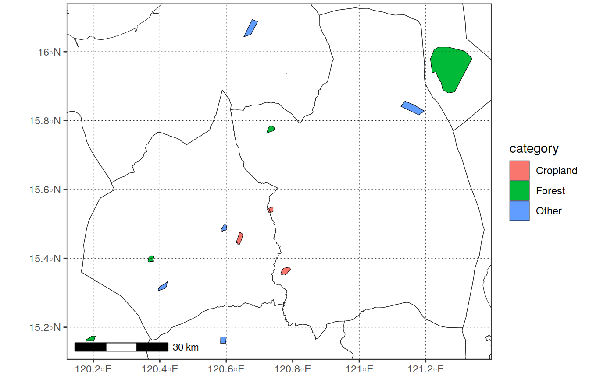
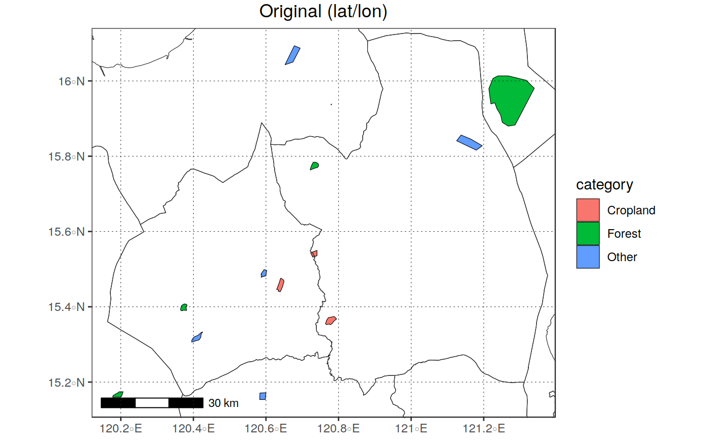
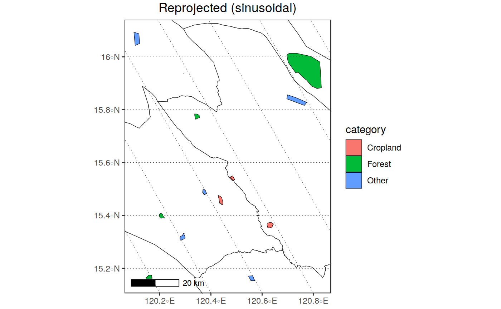

Reproject a vector "R" object or file to a different reference
system. The function is a simple wrapper around sf::st_tranform with
additional checks on inputs allowing to specify the output projection
in several ways:
1: passing a valid proj4 string (e.g., reproj_vect(in_vect, "+init=epsg:4326")
2: passing a numeric or character that can be interpreted as an
EPSG code (e.g., reproj_vect(in_vect, 4326));
3: passing the name of a valid R vector or raster object:
(e.g.,reproj_vect(in_vect, rast_obj), with rast_obj
being an existing R object;
4: passing the path to a valid vector or raster file:
EPSG code (e.g.,reproj_vect(in_vect, "D:/Temp/myfile.tif")
The reprojected vector can be automatically saved to a shapefile through
write_shape by specifying a valid path with the out_file argument.
reproj_vect(in_vect, in_projobj, out_file = NULL, out_type = "vectobject", out_class = NULL, overwrite = FALSE, verbose = TRUE)
| in_vect | A vector object ( |
|---|---|
| in_projobj |
|
| out_file |
|
| out_type |
|
| out_class |
|
| overwrite |
|
| verbose |
|
a vector of class *sf or sp (depending on out_class), or the
path of the file where the reprojected input was saved (if out_type == "vectfile")
sf::st_write sf::st_transform write_shape
library(sprawl.data) library(gridExtra) # reproject a vector file in_vect <- system.file("extdata/shapes","lc_polys.shp", package = "sprawl.data") in_vect <- read_vect(in_vect) bounds <- get_boundaries("PHL", 1)#>#>#># reproject to 3857 (web mercator) out_proj <- 3857 out_vect <- reproj_vect(in_vect, 3857)#>#># Do the same, but also save the output to file out_file <- tempfile(fileext = ".shp") out_proj <- "+proj=sinu +lon_0=0 +x_0=0 +y_0=0 +a=6371007.181 +b=6371007.181 +units=m +no_defs" out_vect <- reproj_vect(in_vect, 3857, out_file = out_file)#>read_vect(out_file)#> Simple feature collection with 13 features and 4 fields #> geometry type: POLYGON #> dimension: XY #> bbox: xmin: 13378130 ymin: 1706901 xmax: 13507440 ymax: 1815546 #> epsg (SRID): NA #> proj4string: +proj=merc +lon_0=0 +lat_ts=0 +x_0=0 +y_0=0 +a=6378137 +b=6378137 +units=m +no_defs #> # A tibble: 13 x 5 #> id lc_type category sup_catego geometry #> <dbl> <chr> <chr> <chr> <simple_feature> #> 1 1 forest_1 Forest Vegetation <POLYGON ((13...> #> 2 2 forest_2 Forest Vegetation <POLYGON ((13...> #> 3 3 urban_1 Other Other <POLYGON ((13...> #> 4 4 cropland_1 Cropland Vegetation <POLYGON ((13...> #> 5 5 cropland_2 Cropland Vegetation <POLYGON ((13...> #> 6 6 forest_3 Forest Vegetation <POLYGON ((13...> #> 7 7 reiver_bed Other Other <POLYGON ((13...> #> 8 8 cropland_3 Cropland Vegetation <POLYGON ((13...> #> 9 9 urban_2_part Other Other <POLYGON ((13...> #> 10 10 sparsfor_part Forest Vegetation <POLYGON ((13...> #> 11 11 water Other Other <POLYGON ((13...> #> 12 12 small_feat Other Other <POLYGON ((13...> #> 13 13 out_feat Other Other <POLYGON ((13...># use a different spatial file or object to set the output projection: rast <- read_rast(system.file("extdata/MODIS_test", "EVIts_test.tif", package = "sprawl.data")) out_vect <- reproj_vect(in_vect, rast)#>#>#>plot_vect(out_vect, borders_layer = bounds, fill_var = "category", title = "Reprojected (sinusoidal)")